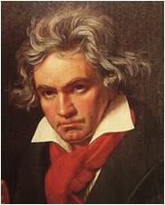

|  |
Beethoven, 1770 yılında Almanya'da (Bonn) doğdu. Alkole karşı olan zaafıyla bilinen Beethoven’in babası Johann da saray müzisyeniydi. İlk piyano derslerini henüz dört yaşındayken babasından aldı. Katı bir insan olan babası çocuğunu çok zorluyor, henüz dört-beş yaşında olan ve parmakları piyanoya yetişemeyen çocuk bazen bu çalışmalar sırasında gözyaşı döküyordu...